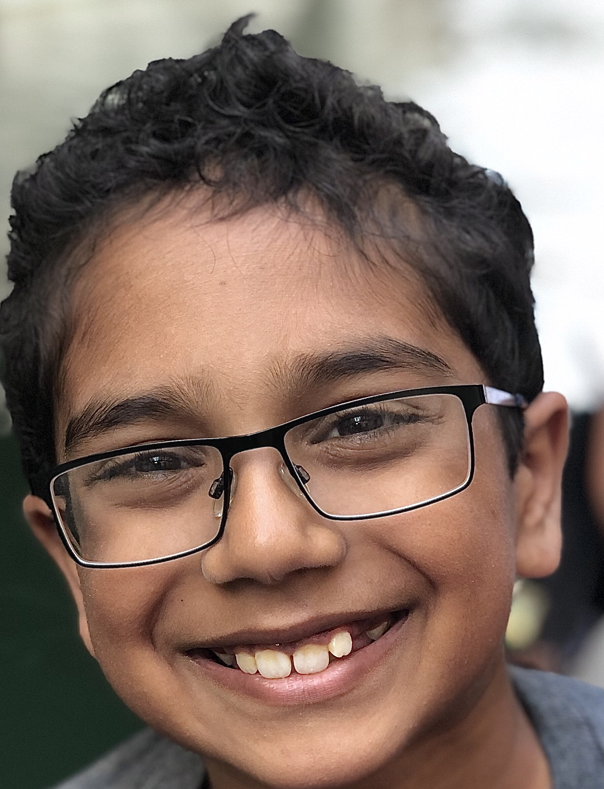

Mithilan Kantharuban, Big brain extraordinaire
Mithilan kantharuban is a 12 year old kid who like to play video games, code, and watch twitch. He spends most of his time on his computer doing different tech related activities. His favorite video game is minecraft because he can play it with his siblings and friends. He was born in 2008 and started coding in 2014. When he was six he was introduce to coding with scratch. In only a few minutes he learned to make the little cat move arround and turn around. Since then his intrest in coding has only increased.
He didnt code much until 3rd grade. In 3rd grade Mithilan and his classmates were all put in a computer class so they could learn to type and some other basic computer skills. At the time his school was paying for a free membership to a site called Hourofcode.org. There he played a course called code minecraft where he coded a minecraft steve to get diamonds and fight monsters. He was coding in scratch, the language he had seen before, he remebered how fun it was and started playing with it more and more that year. In the fourth grade he switched compeletly from Hourofcode.org to Scratch.mid.edu.
All of fourth grade he and a kid named allen who sat across from him in class coded small games and animations in scratch. Durin fifth grade he continued his scratch journeies and learned alot from them, around this time his games were getting alot more complex and they were getting more views. Around sixth grade he masterd making idle and addictive games on scratch, when winter break of fifth grade came he saw alot of indie game developers(People who made full games by themselves, usually 2d and less complex) moniteizing there games by selling them.
The Indie developers or ID's charged alot of money JUST to play there games. Mithilan wanted to make some money off of his game so he could by video games annd other thing for fun. But he also wanted his games to be availabe to everyone. He decided he would moniteize his game through ads, he found a site called kongregate where he could upload his games and he would get payed with the ad cents. He slowly uploaded all of his game to knogregate and was slowly making some small adsense. Since then with the help of some code coaches he learned python and is slowly getting better. Also he wanted a 3d printer so his dad said he had to learn html/css/javascript as a way to pay for it, because of that he learned those languages.